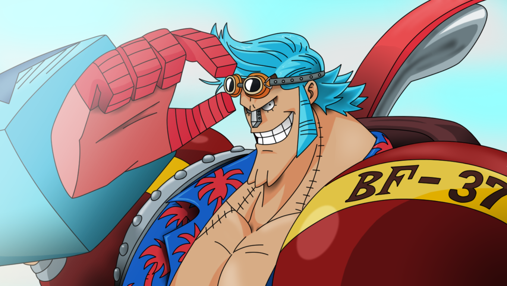
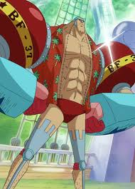
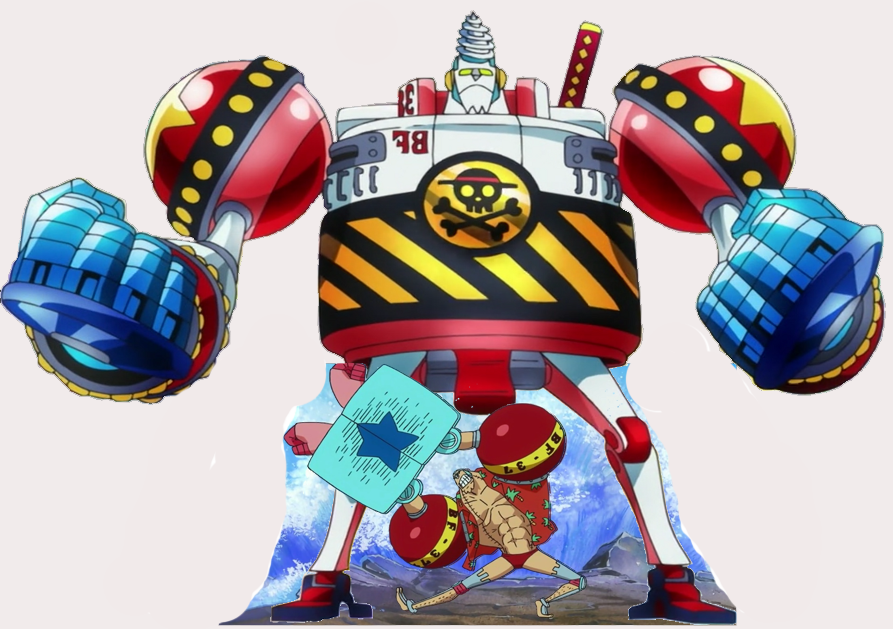
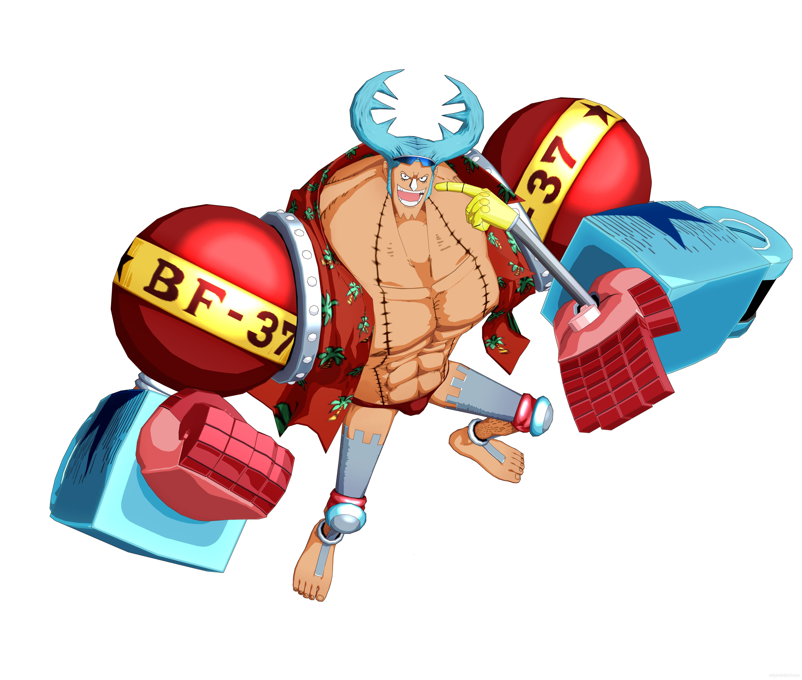

"Iron Man" Franky[10][2] is the shipwright for the Straw Hat Pirates. A cyborg from Water 7, he was originally the leader of the Franky Family, a group of ship dismantlers.[1] He is originally from South Blue [11], but left 32 years ago as a four-year-old child. He was originally named "Cutty Flam" until he threw away his original name for his nickname per the request of Iceburg to hide his identity.[12] Franky and his followers were originally enemies of the Straw Hats until circumstances forced them to become allies. At the request of the Franky Family, Franky decided to join the Straw Hats to fulfill his dream of creating and riding a ship capable of circumnavigating the world, the Thousand Sunny. He is the eighth member of the Straw Hat crew and the seventh to join Luffy's crew.[13] He currently has a bounty of Beli94,000,000.[2] Previously going by the epithet, "Cyborg" Franky, after most likely having his favourite weapon being confused as his main body by the authorities, he has since gained the new nickname, "Iron Man".
|  |  |  | |
|
|
 |